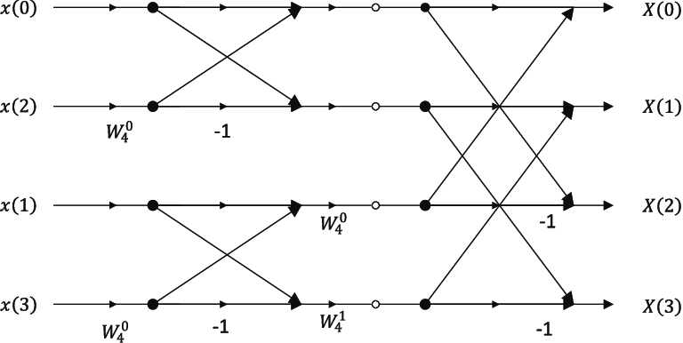

IDFT of DIFFFT
In this topic we will discuss about 8 point and 4 point IDFT of DIFFFT in FFT.
8 point IDFT of DIFFFT
IDFT of DIFFFT structures takes input as bit reversed order and output as normal order.These structures can be obtained or solved by using butterfly diagram and its formulas.First we will break 8 point DFT into 4 points and then to 2 points DFT.the formula of DIFFFT's IDFT 8 point is
Xm-1(p) = 1/2[Xm(p) + Wn-r * Xm(q)]
Xm-1(q) = 1/2[Xm(p) - Xm(q) * Wn-r]

Enter the input sequence :
4 point IDFT of DIFFFT
This 4 point IDFT of DIFFFT is same as 8 point, but here we will just break 4 point IDFT into 2 points IDFT by using the same butterfly diagram and the above formulas.
